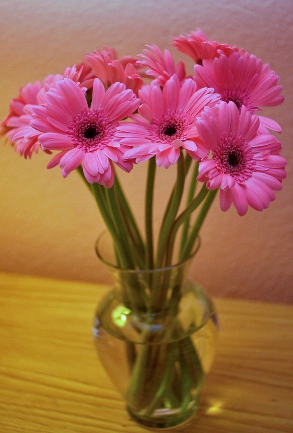
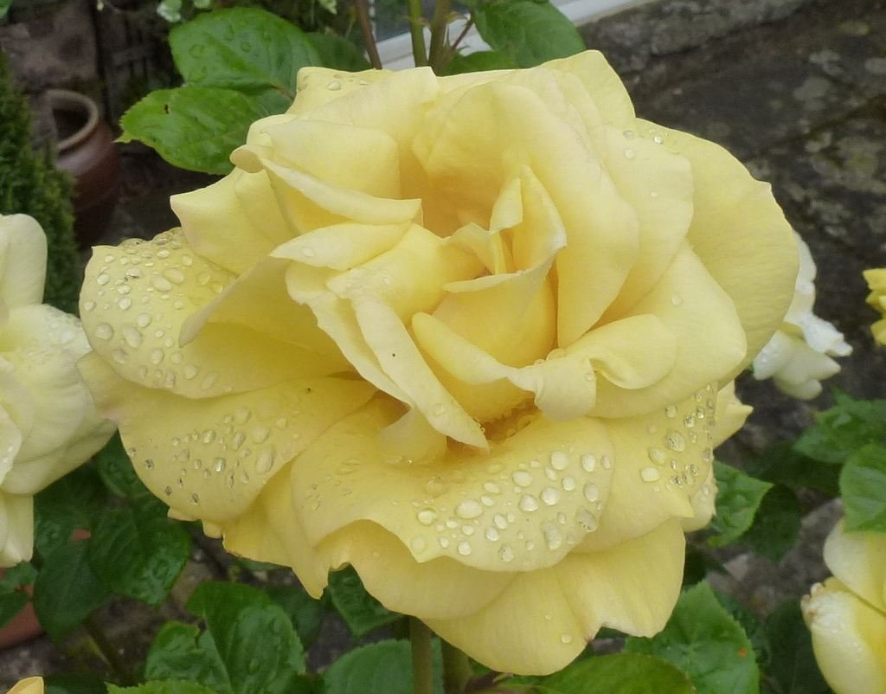
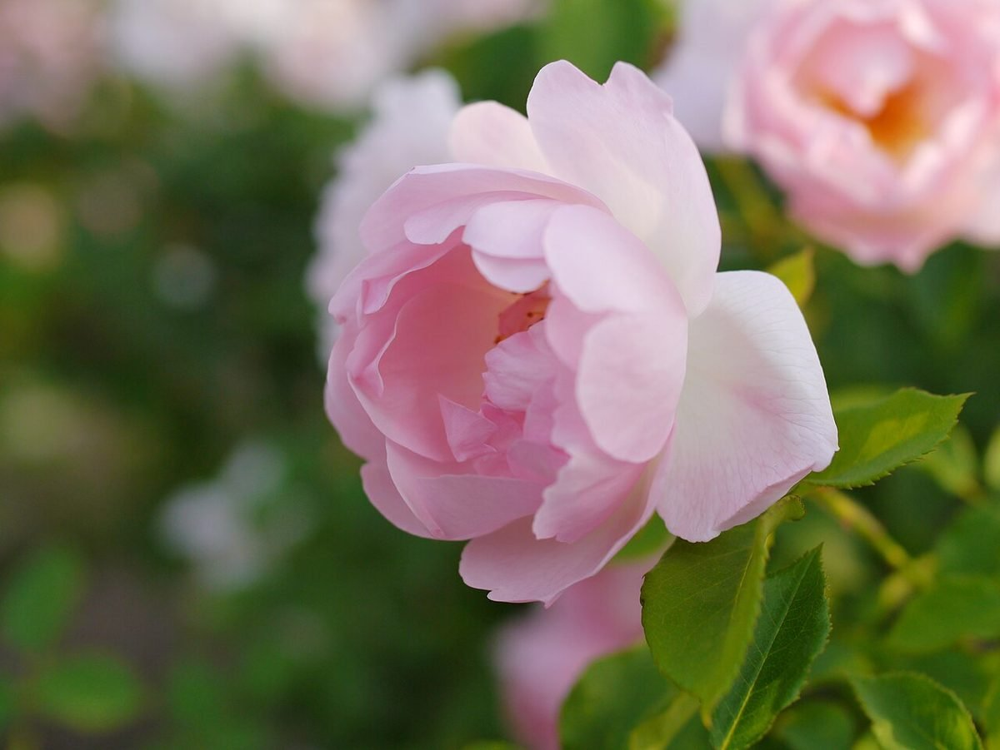

Flowers & Service
お花・サービス
お店で扱う花の種類、価格、配達やご予約の有無は、現時点では確認できていません。分かり次第こちらに書きます。ここに並べた写真は、花屋らしい場面を想像して選んだフリー素材のイメージです。


ご案内の札
| 取扱商品 | 準備中 |
|---|---|
| 価格 | 準備中 |
| 配達 | 準備中 |
| ご予約・ご注文 | 準備中 |
| 営業時間 | 準備中 |
| 定休日 | 準備中 |
| 駐車場 | 準備中 |
お問い合わせは、いまのところInstagramからお願いします。
Instagram @tomochanchi_ohana
